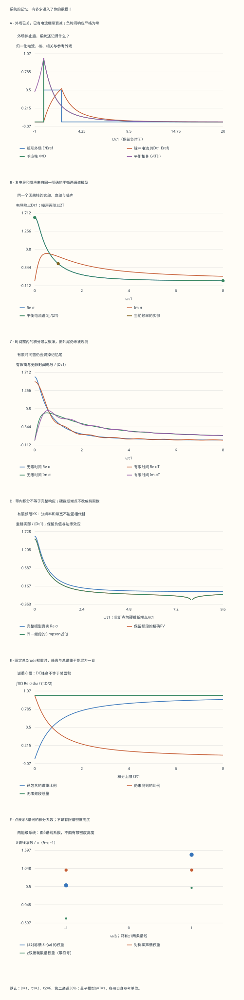

本页目录
非平衡统计 II · Kubo响应、有限记录与量子噪声
电场已经关掉，电流为什么还没有归零？只测了一段频率，能否恢复完整的因果响应？这两个问题都在问：系统的记忆，有多少进入了你的数据。
前置路线：涨落与路径热力学 → 关联与输运 → 本课。量子推导用到微扰和对易子到响应谱。
完成后应能：从驱动方程得到一个因果核，核对复电导的符号和单位，分开计算误差与观测截断，并用两能级谱线检查量子FDT。这里的可解模型不代替具体材料的微观输运理论。
1. 先说清楚：谁驱动谁，测量哪一个量
设外场 \(f(t)\) 通过 \(H'(t)=-f(t)B\) 耦合，观察 \(A\) 的平均值变化。一阶响应写成
平均 \(\langle\cdot\rangle_0\) 在未扰动的参考态中计算；算符按未扰动哈密顿量演化。参考态平稳时，响应只依赖两次时刻之差。核在负时间为零表达因果性；积分上限只让已施加的外场影响现在。
这个正号不是凭记忆选择的。相互作用绘景给 \(\delta\rho_I=(i/\hbar)\int f(t')[B_I(t'),\rho_0]dt'\)，而 \(\operatorname{Tr}(A[B,\rho_0])=\operatorname{Tr}(\rho_0[A,B])\)，所以对当前的 \(H'=-fB\) 得到上式。若交换对易子次序，系数必须一起换号。
本课用两个对象分别检验它。电流模型的外场是电场，响应是电流；量子模型的 \(B=\sigma_x\)，外场是其共轭广义力。实验共用一个幅度滑块，但两者各按自身参考单位解释，不能把两个数直接当成同一个SI电场。
2. 从一个微分方程得到两种记忆
用两个互不耦合的弛豫通道表示电流：
\(D_j\) 是通道的Drude权重，\(\tau_j>0\) 是弛豫时间。乘以积分因子 \(e^{t/\tau_j}\)，并取足够早以前未被驱动的解：
\(J_j(t)=D_j\int_{-\infty}^t e^{-(t-t')/\tau_j}E(t')dt'\)。
因此总电流的响应核为 \(\Phi(t)=\theta(t)\sum_jD_je^{-t/\tau_j}\)。不是在画完图后把负时间裁掉；因果条件已经进入方程的解。这里采用右连续的 \(\theta(0)=1\)，单点约定不改变普通外场的卷积。
如果 \(E\) 的单位是 \(\mathrm{V/m}\)，\(\sigma\) 的单位是 \(\mathrm{S/m}\)，那么 \(\Phi\) 和 \(D_j\) 的单位都是 \(\mathrm{S/(m\,s)}\)。核要乘电场再对时间积分，才能得到 \(\mathrm{A/m^2}\)。因此核与电导不能只因曲线形状相似就混用单位。
两个时间常数允许快、慢通道共同存在；这不是对任意多带材料、强相互作用体系或记忆核的普遍推导。模型只在此明确的线性方程与正权重条件下成立。
3. Fourier约定决定复电导的相位
采用变换 \(g(\omega)=\int_{-\infty}^{\infty}e^{i\omega t}g(t)dt\)，逆变换带 \(e^{-i\omega t}\)。卷积变成乘积：
每个通道的实部是 \(D_j\tau_j/[1+(\omega\tau_j)^2]\)，虚部是 \(D_j\tau_j^2\omega/[1+(\omega\tau_j)^2]\)。前者对频率为偶，后者为奇；整个函数满足 \(\sigma(-\omega)=\sigma(\omega)^*\)。
对实电场 \(E_0\cos\omega t\)，稳态电流为 \(E_0[\sigma'\cos\omega t+\sigma''\sin\omega t]\)，也就是 \(E_0|\sigma|\cos(\omega t-\phi)\)，其中 \(\phi=\arg\sigma\)。正的 \(\phi\) 在这个约定中表示相位滞后。
每个非零权重通道的极点为 \(-i/\tau_j\)，都在下半平面。零权重通道在表里保留参数，但不算实际极点。上半平面解析性表达的是因果结构；正的 \(\operatorname{Re}\sigma\) 还反映了这个模型的被动性，二者不是同一个条件。
练习1 · 从阶跃读出时间常数，别把角频率当成普通频率
单通道在 \(t=\tau\) 的阶跃响应占最终值多少？如果电导实部在角频率 \(10^{14}\ \mathrm{s^{-1}}\) 降到DC值的一半，求 \(\tau\) 与普通频率。
解：积分给 \(J(t)=D\tau E_0(1-e^{-t/\tau})\theta(t)\)，因此比例为 \(1-e^{-1}\approx0.63212\)。半高条件 \(1/[1+(\omega\tau)^2]=1/2\) 给 \(\tau=1/\omega=10^{-14}\ \mathrm s=10\ \mathrm{fs}\)。普通频率是 \(\nu=\omega/(2\pi)\approx15.9\ \mathrm{THz}\)。把这里的 \(\omega\) 直接写成 \(100\ \mathrm{THz}\) 会漏掉 \(2\pi\)。
4. 脉冲关掉以后，电流仍会衰减
实验施加矩形场：\(0\le t<L\) 时 \(E=E_0\)，其他时间为零。因为线性，可以把它拆成一个正阶跃减去一个延后的阶跃。对每个通道：
电场在 \(L\) 跳变，电流本身连续，电流的右侧导数改变。慢通道在脉冲结束时可能尚未建立稳态，但会在之后留下较长尾巴。这个尾巴不是场在未来的作用，而是过去驱动留下的状态。
对非零频率的完整正弦周期，平均输入功率密度是 \(\overline{JE}=E_0^2\operatorname{Re}\sigma/2\)。真正的DC恒定电场则给 \(E_0^2\sigma(0)\)，没有 \(1/2\)。先平均一个长度越来越长的完整周期，再令频率趋零，与直接施加恒定场不是同一个过程。
练习2 · 脉冲只有一个弛豫时间那么长
单通道 \(L=\tau\)。场关掉瞬间的电流是多少？再过一个 \(\tau\)，电流是它的多少？这段衰减违反因果性吗？
解：在关场时 \(J(L)=D\tau E_0(1-e^{-1})\)；到 \(L+\tau\)，电流乘上 \(e^{-1}\approx0.36788\)。外场已为零，方程变成 \(\dot J=-J/\tau\)。衰减由已有电流状态决定，因此完全符合因果性。若关场时强行把 \(J\) 也设为零，反而更换了原来的动力学。
5. 谱重守恒与Green–Kubo：两种可核对的积分
固定总权重 \(D=\sum_jD_j\) 时，
单通道增加 \(\tau\) 会使DC峰更高、更窄，却不改变总面积。若只比较峰高，会误判谱重的变化。若保持的是 \(\sigma_{\rm DC}\) 而不是 \(D\)，结论也会改变，因为那相当于同时改变了权重。
再为同样的线性平均响应构造一个明确的平衡随机电流模型。在单位体积与 \(k_B=1\) 的参考单位中，独立模式满足 \(dJ_j=-(J_j/\tau_j)dt+D_jE\,dt+\sqrt{2TD_j/\tau_j}\,dW_j\)。零场平衡方差为 \(TD_j\)，所以 \(C_{JJ}(t)=T\sum_jD_je^{-|t|/\tau_j}\)。
对非负时间，\(C_{JJ}(t)/T=\Phi(t)\)；其双边噪声谱满足 \(S_{JJ}(\omega)=2T\operatorname{Re}\sigma(\omega)\)。这提供了Green–Kubo关系的可算实现。负时间的相关一般不为零，而负时间响应为零：平衡涨落不因尚未施加外场就消失。
真实系统的体积、张量指标、规范耦合与接触项必须按定义处理。特别是从电流对矢势的响应换成对电场的电导时，还涉及频率因子和抗磁项，不能把任意电流对易子直接叫作最终电导。
练习3 · 只测到ωτ=1，包含了多少谱重？
单通道频率只测到 \(\Lambda\tau=1\)。正频率总谱重中有多少落在测量带内？增加 \(\tau\) 而保持同一个物理带宽 \(\Lambda\) 会怎样？
解：保留比例是 \((2/\pi)\arctan(\Lambda\tau)\)，在 \(\Lambda\tau=1\) 时等于 \(1/2\)。固定 \(\Lambda\) 增大 \(\tau\)，谱峰变窄，保留比例增加；总面积仍为 \(\pi D/2\)。这并不是产生了新谱重，而是更多已有谱重落入测量窗口。
6. 有限时间记录：误差可以算得很准，也仍然很大
若只知道 \(0\le t\le T_{\rm obs}\) 的响应核，得到的是有限窗变换
它与无限时间电导之间的差是窗外尾。每个通道尾的模不超过 \(D_j\tau_je^{-T_{\rm obs}/\tau_j}\)，所以把这些量相加可得一个保守上界。慢通道可能主导遗漏，即使其权重并不最大。
本实验同时保留有限窗的解析积分、Simpson近似、两者之差，以及有限窗与无限时间之间的差。前者能通过加密节点改善；后者需要延长记录或引入可检验的尾部模型。
矩形时间窗保留了负时间为零的因果条件，但不保证截断后的频率实部仍处处非负。有限窗出现振荡、甚至负实部，不自动意味着原材料是主动放大器。要检查它是否来自窗函数，而不是先替换材料物理。
练习4 · 默认记录的积分误差很小，为何仍不能报告无限时间响应？
默认参数为 \(D=1,\tau_1=2,\tau_2=6,a=0.3,\omega=0.5,T_{\rm obs}=12\)。真实复电导为 \(0.88+1.24i\)。有限窗解析结果约为 \(0.8340391+1.1754552i\)；80小段Simpson结果约为 \(0.8340385+1.1754548i\)。请给出两类误差。
解：数值减去有限窗解析值，实、虚部误差约为 \(-5.81\times10^{-7}\) 与 \(-4.35\times10^{-7}\)。无限时间减去有限窗，实、虚部遗漏却约为 \(0.0459609\) 与 \(0.0645448\)，尾的模约为 \(0.0792366\)。再加密网格无法消除这段未观测的记忆。完整表中还保存每个节点、权重和两种被积函数，便于独立重算。
7. Kramers–Kronig：主值积分为什么需要全部频率
因果核的Fourier–Laplace变换在上半平面解析；在适当的无穷远衰减条件下，实虚部满足
\(\mathcal P\) 是Cauchy主值：对内点的奇异性进行对称处理，不是随意删掉某个采样点。如果有不衰减的瞬时项，需要先分离或采用合适的减法关系；本课的Drude混合具有所需衰减。
令 \(g(\nu)=\nu\operatorname{Im}\sigma(\nu)\)。只保留 \([0,\Lambda]\) 时，对 \(\omega>0\) 且 \(\omega\ne\Lambda\)，把积分写成
\(\int_0^\Lambda[g(\nu)-g(\omega)]/(\nu^2-\omega^2)d\nu+[g(\omega)/(2\omega)]\ln|(\Lambda-\omega)/(\Lambda+\omega)|\)，
再乘 \(2/\pi\)。内点的被积函数已经可去奇异；本模型每个通道的第一项被积函数正好化为 \(D_j\tau_j^2/\{[1+\nu^2\tau_j^2][1+\omega^2\tau_j^2]\}\)。
在 \(\omega=0\)，直接取连续极限。若 \(\omega>\Lambda\)，有限区间内本来就没有极点，但仍不代表你恢复了整个频段。若 \(\omega=\Lambda\)，硬截断产生对数端点发散：本实验显示“不适用”、图中断开，并在下载里保存明确状态和空值，不会将它改成零。
8. 有限频段重建：增加节点不能补出未知的尾
对单个通道，保留带内的结果可显式算成
混合模型把各通道相加。让 \(\Lambda\to\infty\)，第一项回到真实电导实部，第二项趋零。有限 \(\Lambda\) 时即使积分完全精确，也仍可与真实响应有显著差别，靠近截断边缘时尤其明显。
实验画出三个对象：完整模型真值、带内解析积分、带内数值积分。表中“模型给出的缺失尾”用的是已知Drude模型，不能描述成仅凭实测带内数据就恢复出的事实。不同的带外模型可以改变重建，因此实验分析需要讨论外推依据、误差与独立的谱重约束。
练习5 · 默认带宽内的积分几乎算准了，还缺什么？
默认 \(\Lambda\tau_1=8\)，即 \(\Lambda=4\)。在 \(\omega=0.5\)，带内KK解析结果约为 \(0.7206164\)，数值结果约为 \(0.7206130\)，完整模型实部为 \(0.88\)。如何解释三者？
解：带内积分的数值误差约为 \(-3.40\times10^{-6}\)，完整响应与带内解析值之间却差 \(0.1593836\)。后者由未纳入的频段贡献，不是积分分段太少。增加带宽可在这个已知模型中减小遗漏；在真实数据中则须明确带外假设。把数值重建“修正到0.88”而不说明模型来源，会隐藏推断依赖的信息。
9. 两能级量子模型：先算对易子，再谈噪声
取 \(H_0=\Delta\sigma_z/2\)、\(B=\sigma_x\)，并设 \(\hbar=k_B=1\)。基态和激发态概率分别为 \(p_g=1/(1+e^{-\beta\Delta})\) 与 \(p_e=e^{-\beta\Delta}/(1+e^{-\beta\Delta})\)。记 \(r=p_g-p_e=\tanh(\beta\Delta/2)\)。
按Heisenberg演化，直接做两个矩阵乘法得
无阻尼振荡的Fourier积分用收敛因子 \(e^{-\eta t}\) 定义，并在积分后取 \(\eta\to0^+\)。等价地，在 \(\operatorname{Im}z>0\) 先计算 \(\chi(z)=2r\Delta/(\Delta^2-z^2)\)，再取实轴边界值；谱线中的 \(\delta\) 正是这个极限的一部分。
因为 \(\langle[B(t),B(0)]\rangle=-2ir\sin(\Delta t)\)，乘上本课Kubo公式的 \(i\) 后得到正的响应核。这是检查符号的一条独立途径。静态易感率为 \(\chi_0=2r/\Delta>0\)，也可用微小静态外场的精确热平衡状态导数确认。
孤立的两个能级没有连续的弛豫谱。时间响应会振荡，频率响应中的耗散谱由离散谱线组成。它与前面的指数衰减电流模型拥有不同的动力学假设，不能把其振荡用“有同一个τ的衰减”代替而不说明额外环境。
10. 量子FDT比较的是带权谱线
在当前Fourier约定下，非对称谱为 \(S^>(\omega)=2\pi[p_g\delta(\omega-\Delta)+p_e\delta(\omega+\Delta)]\)。对称噪声谱两条线的权重都为 \(\pi\)；耗散谱 \(\chi''\) 在正负频率的权重则是 \(+\pi r\) 与 \(-\pi r\)。
逐条谱线检查
这是分布或谱测度意义的等式。图中的点画的是乘在 \(\delta\) 前面的系数，纵坐标有有限数值并不表示 \(\delta\) 本身有有限高度。给谱线展宽后，峰高依赖展宽方式与宽度；也不能随意把同样的Lorentzian乘到两边就假定仍保持精确KMS关系。
负频率与正频率非对称谱的权重比为 \(e^{-\beta\Delta}\)。低温时负频率权重很小但保留在完整表中；对称谱的量子涨落不会因此消失。高温或低能量满足 \(\beta|\omega|\ll1\) 时，\(\coth(\beta\omega/2)\approx2T/\omega\)，才回到相应经典形式。
练习6 · 默认温度下，三种谱的权重是什么？
取 \(\Delta=T=1\)。计算两条非对称谱权重、对称谱权重与耗散谱权重，结果都除以 \(\pi\)。
解：\(p_g\approx0.7310586\)，\(p_e\approx0.2689414\)，\(r\approx0.4621172\)。负、正频率的非对称谱权重依次为 \(0.5378828,1.4621172\)；对称谱都是1；耗散谱依次为 \(-0.4621172,+0.4621172\)。在正频率，\(\coth(1/2)\,r=1\)。负频率时两因子一起变号，所以对称噪声权重仍为正。它们是谱线积分系数，不是频率采样密度。
11. 线性项何时不够：与真实有限场热平衡比较
对静态场 \(f\)，完整哈密顿量为 \(H_f=\Delta\sigma_z/2-f\sigma_x\)，能量为 \(\pm E_f\)，其中 \(E_f=\sqrt{(\Delta/2)^2+f^2}\)。重新达到该哈密顿量的热平衡后，\(\langle B\rangle_f=(f/E_f)\tanh(\beta E_f)\)。
在 \(f=0\) 求导得到 \(2\tanh(\beta\Delta/2)/\Delta\)，与Kubo静态结果一致。有限场时，线性近似 \(\chi_0 f\) 不再包含所有高阶项。实验保存从负场到正场的81个值，以及当前场的精确结果、线性值与相对差；当线性值为零时，相对差标为不适用。
这里比较的是不同外场下重新达到的Gibbs态。若把外场突然加到一个孤立两能级系统上，并按新哈密顿量幺正演化，一般不会自动走到上述热平衡值。平衡静态比较、孤立淬火和与环境耦合后的稳态，要用不同的动力学回答。
练习7 · 默认外场是否已经足够小？
\(\Delta=T=1,f=0.5\) 时，线性近似与精确热平衡结果差多少？这一误差能由加密时间积分网格解决吗？
解：\(\chi_0\approx0.9242343\)，线性值约为 \(0.4621172\)。精确值 \((0.5/\sqrt{0.5})\tanh(\sqrt{0.5})\approx0.4305286\)，相对于线性值偏低约 \(6.84\%\)。这是忽略高阶场响应造成的误差，与前面电流模型的积分节点数无关。应减小场、估计高阶项或使用完整模型，而不是用更密的数值网格掩盖近似条件。
12. 实验、退出题与研究接口
无脚本对照：六份固定记录保留全部时间和频率扫描、每个积分节点、积分误差与遗漏尾、谱重、量子谱线和有限场比较。硬截断端点保存为明确的不适用状态。

| 预设 | DC电导 | Re σ | Im σ | 时间窗遗漏尾模 | 带内KK | 已含谱重比例 | 量子χ0 |
|---|---|---|---|---|---|---|---|
| default | 3.2 | 0.88 | 1.24 | 0.079236574 | 0.72061644 | 0.93663006 | 0.92423431 |
| single | 2 | 1 | 1 | 0.0035054849 | 0.84083728 | 0.92083315 | 0.92423431 |
| short | 3.2 | 0.88 | 1.24 | 0.75145302 | 0.72061644 | 0.93663006 | 0.92423431 |
| endpoint | 3.2 | 0.32864865 | 0.85189189 | 0.041533994 | 不适用 | 0.76184186 | 0.92423431 |
| cold | 3.2 | 0.88 | 1.24 | 0.079236574 | 0.72061644 | 0.93663006 | 0.5 |
| strong | 3.2 | 0.88 | 1.24 | 0.079236574 | 0.72061644 | 0.93663006 | 0.99667995 |
下载六份完整记录。默认有限窗积分误差约百万分之一，而窗外尾约0.0792；这两类误差由不同原因产生。
先回答四个预测，再使用12个预设对照六幅图。每次改变控件，都要重新预测；完整参数、所有积分节点、241点频率扫描、量子谱线与矩阵结果对应的表均可下载。静态图使用默认记录；更多参数通过六份固定记录保留，不依赖脚本才能读到基本结论。
顺序任务：先选单通道，连接阶跃、半高频率与总谱重；再换成两个时间尺度，缩短记录窗并加密网格；随后把频段上限移到选定频率，解释“不适用”从哪里来；最后比较冷、热与强场的两能级结果。解释差异时，每次先写清比较的是哪个模型、哪一种误差和哪个状态。
练习8 · 面对一条看起来“不物理”的曲线，先查什么？
有限窗电导实部出现局部负值；有限频段KK重建在边缘急剧变化；两能级模型的负频率谱线几乎看不见。分别判断这三件事是否已经证明材料违反因果性或平衡FDT。
解：都还没有。有限时间窗可改变被动性相关的谱形，但截断核仍可保持因果；应检查窗函数与遗漏尾。硬频率边缘的急剧变化可以来自对数端点项，应检查带宽和带外外推。两能级非对称谱线按 \(e^{-\beta\Delta}\) 比例受抑制正是平衡详细平衡的预期，不能与对称噪声谱混淆。要作物理结论，需要把测量操作与模型定义分开，并核对完整的数据及误差。
向前走时，谱函数与关联输运会加入连续谱、守恒量与输运极限；主动物质会检验离开平衡后噪声和响应如何分离；量子临界与全息信息分别连接多体尺度行为与另一类强耦合研究工具。这里的两种有限模型提供检验习惯，不自动给出那些研究问题的答案。
原始阅读：David Tong《Kinetic Theory》第4章的响应定义、Kubo公式与量子FDT；MIT 5.74 线性响应讲义的Fourier约定与Kramers–Kronig关系。本课固定 \(H'=-fB\)，并以密度矩阵与精确静态导数独立核对对易子符号；阅读其他约定时应一起核对变换与耦合定义。